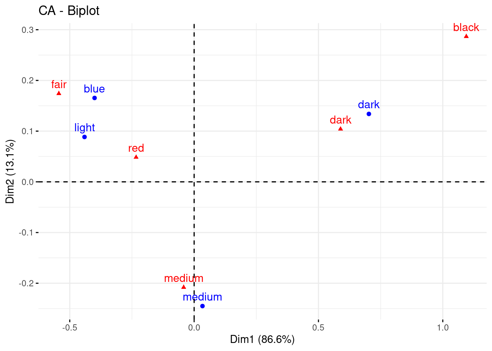

Ando falto de ideas, no sé si es la pandemia, el teletrabajo ( o la esclavitud en tiempos modernos como me gusta llamarlo) u otra cosa. Total, que me he puesto a bichear un post antiguo de mi amigo Carlos Gil sobre NMF (factorización no negativa de matrices). Cómo siempre el lo cuenta mucho mejor que yo.
Total, que puede que en breve me toque tener algo a lo que quizá se pueda aplicar este tipo de técnicas, a saber, tener clientes y productos.
De hecho voy a usar su mismo ejemplo.
Nota: La librería es mejor si se instala desde BioConductor con BiocManager.
La librería NMF está bastante bien, utiliza paralelización, por debajo está escrita en C, pero tiene el incoveniente de que aún no está implementado un método predict para nuevos datos
library(MASS)
library(NMF) # BiocManager::install("NMF")
a <- as.matrix(caith)
res <- nmf(a, rank = 2)
a## fair red medium dark black
## blue 326 38 241 110 3
## light 688 116 584 188 4
## medium 343 84 909 412 26
## dark 98 48 403 681 85El caso es factorizar esta matriz en dos matrices no negativas. Otras formas de factorizar esta matriz podría ser con análisis de correspondencias simples. Pero vamos a la descomposición por nmf
w <- res@fit@W
h <- res@fit@Hw ## [,1] [,2]
## blue 229.78817 38.13403
## light 532.79041 31.05907
## medium 346.78554 524.74655
## dark 10.34261 869.67806h## fair red medium dark black
## [1,] 1.18865069 0.19006456 1.1997082 0.2997579 0.001188372
## [2,] 0.08476245 0.05000174 0.5422719 0.7210620 0.079713009Reconstruimos a
w %*% h## fair red medium dark black
## blue 276.37021 45.58136 296.3578 96.37782 3.312852
## light 635.93433 102.81758 656.0355 182.10365 3.108965
## medium 456.68567 92.14988 700.5967 482.32648 42.241237
## dark 86.00979 45.45118 484.0100 630.19204 69.336946Y si comparamos con a
a - (w %*% h)## fair red medium dark black
## blue 49.62979 -7.581356 -55.35776 13.622177 -0.3128523
## light 52.06567 13.182418 -72.03547 5.896346 0.8910349
## medium -113.68567 -8.149881 208.40327 -70.326485 -16.2412371
## dark 11.99021 2.548819 -81.01004 50.807961 15.6630545Bueno, la reconstrucción no es perfecta, pero bueno, no está tan mal.
Bien, tal y como cuenta Carlos en su entrada ahora podemos normalizar las filas de W y de H, de forma que tengamos probabilidades. Dónde entonces H sería funciones de probabilidad sobre las filas de la matriz original y W serán ponderaciones. O como dice él, H es un menú de preferencias (imaginemos que tenemos usuarios en filas y productos en columnas), en este caso hemos hecho una reducción de dimensión para quedarnos en 2 preferencias, (sería el equivalente conceptual al número de componentes en un PCA o en un CA), y W serían las ponderaciones que cada usuario da a cada una de las preferencias (sus coordenadas en un correspondencias siguiendo el símil)
Normalicemos
w_hat <- w / rowSums(w)
w_hat## [,1] [,2]
## blue 0.85766752 0.14233248
## light 0.94491603 0.05508397
## medium 0.39790335 0.60209665
## dark 0.01175269 0.98824731h_hat <- h / rowSums(h)
h_hat## fair red medium dark black
## [1,] 0.41281628 0.06600908 0.4166565 0.1041054 0.0004127195
## [2,] 0.05735676 0.03383500 0.3669426 0.4879257 0.0539399210Así, el primer “menú” está compuesto por los “productos” fair, red, etc, en proporción a como indica la primera fila de h_hat. Y el individuo “blue” prefiere el primer menú en casi un 0.9 de probabilidad vs un alrededor de 0.1 de preferencia del menú 2. En un PCA diríamos que esos son los “loadings”.
Las filas de W a veces se asocian con arquetipos o individuos promedio. Los individuos “blue” tienen esos pesos los dos factores latentes.
En este caso dónde tenemos color de ojos (fila) y color del pelo (columnas), vemos que en las dos distribuciones multinomiales que hay en sendas filas de h_hat (si, eso es lo que son, dos distribuciones multinomiales), la probabilidad de tener el pelo negro es bastante pequeña (tiene que ver con la tabla de contingencia original, hay muy pocos con el pelo negro).
Pero vemos que hay un arquetipo, (el de os ojos oscuros) para el cual el peso que da al menú de preferencias 1 (dónde la probabilidad de tener el pelo negro es mayor). Es decir, al final es una mixtura de distribuciones multinomiales.
En realidad lo que hace NMF es descubrir la estructura subyacente de los datos en un espacio de menor dimensión que el original. Bueno, pues con W y H normalizadas podemos construir una matriz diagonal D que simplemente nos genere muestras de individuos y en qué columnas caen.
Podemos utilizar como matriz diagonal la suma de las filas de a, y así obtener
(d <- diag(rowSums(a)))## [,1] [,2] [,3] [,4]
## [1,] 718 0 0 0
## [2,] 0 1580 0 0
## [3,] 0 0 1774 0
## [4,] 0 0 0 1315Y podemos hacer $A D W H $
d %*% w_hat %*% h_hat## fair red medium dark black
## [1,] 260.07600 44.10650 294.0789 113.9721 5.766530
## [2,] 621.31313 101.49416 653.9906 197.8914 5.310712
## [3,] 352.66285 82.73435 686.0483 594.6489 57.905610
## [4,] 80.91769 44.99027 483.2979 635.6904 70.103745Que se parece bastante a w %*% h , o podríamos usar otra D, en este caso para obtener qué matriz se obtendría para 10 casos de cada fila.
d <- diag(c(10,10, 10, 10))
d %*% w_hat %*% h_hat## fair red medium dark black
## [1,] 3.6222285 0.6142967 4.095806 1.587355 0.08031379
## [2,] 3.9323616 0.6423681 4.139181 1.252477 0.03361210
## [3,] 1.9879529 0.4663718 3.867240 3.352023 0.32641268
## [4,] 0.6153436 0.3421314 3.675269 4.834148 0.53310832y bueno, la verdad es que me pregunto si esto se parece o no a un análisis de correspondencias. Veamos
library(FactoMineR)
res_ca <- CA (a, ncp = 2) Lo primero que hay que darse cuenta es que ambas técnicas no son del todo comparables, el correspondencias busca encontrar dimensiones que expliquen la mayor cantidad de inercia (distancia Chi-cuadrado) y es parecido al PCA en el sentido de que la primera dimensión es la que más explica, etc.. De hecho el CA, diagonaliza 2 matrices derivadas de la tabla de contingencia, una la de los perfiles filas y otra la de los perfiles columna. Y las pinta junta de acuerdo a algún teorema baricéntrico que tuve que demostrar en algún examen allá por los lejanos 90’s.
Pero en realidad si nos fijamos en las coordenadas de las filas en el CA
res_ca$row$coord## Dim 1 Dim 2
## blue -0.40029985 0.16541100
## light -0.44070764 0.08846303
## medium 0.03361434 -0.24500190
## dark 0.70273880 0.13391383No es más que ver las filas en un subespacio (el calculado por el CA) del espacio definido por las columnas y de forma análoga pasa con las columnas. Estas coordenadas podrían ser una forma de codificar la variable categórica. Cabe preguntarse si tienen relación con la estructura obtenida por el NMF.
coordenadas_filas <- cbind(res_ca$row$coord, w_hat)
colnames(coordenadas_filas)[3:4] <- paste0("nmf_", 1:2)
coordenadas_filas## Dim 1 Dim 2 nmf_1 nmf_2
## blue -0.40029985 0.16541100 0.85766752 0.14233248
## light -0.44070764 0.08846303 0.94491603 0.05508397
## medium 0.03361434 -0.24500190 0.39790335 0.60209665
## dark 0.70273880 0.13391383 0.01175269 0.98824731y
cor(coordenadas_filas)## Dim 1 Dim 2 nmf_1 nmf_2
## Dim 1 1.00000000 -0.05155554 -0.9848757 0.9848757
## Dim 2 -0.05155554 1.00000000 0.2049803 -0.2049803
## nmf_1 -0.98487570 0.20498031 1.0000000 -1.0000000
## nmf_2 0.98487570 -0.20498031 -1.0000000 1.0000000Resultado coherente, ¿no? . En este ejemplo de juguete una única dimensión del correspondencias explica el 86,5% de la inercia.
Cosas buenas del nmf.
Ah, se me olvidaba. ¿qué pasa si tengo una nueva fila/usario?, la librería NMF no permite predecir, y aunque se podría implementar, buscando un poco se encuentra la forma
library(NNLM)
res_nmf2 <- nnmf(a, k = 2, loss = "mkl")res_nmf2$W## [,1] [,2]
## blue 1.766710 13.89218380
## light 1.657979 32.24811241
## medium 22.526813 20.66014922
## dark 36.976673 0.05812027res_nmf2$H## fair red medium dark black
## [1,] 2.295245 1.224273 13.05868 17.035463 1.875154e+00
## [2,] 19.602042 3.125385 19.67199 4.771108 3.484910e-16Nuevas filas
b <- matrix( data = c(20, 30, 40, 0,20, 10, 10, 30,10, 90), nrow=2, byrow = TRUE)
colnames(b) <- colnames(a)
rownames(b) <- c("tipo_n1", "tipo_n2")
b## fair red medium dark black
## tipo_n1 20 30 40 0 20
## tipo_n2 10 10 30 10 90Y tiene un método predict
predict(res_nmf2, newdata = b, which = "W")## $coefficients
## [,1] [,2]
## tipo_n1 1.272877 1.374314
## tipo_n2 4.226683 0.000000
##
## $n.iteration
## [1] 30
##
## $error
## MSE MKL target.error
## 1304.02310 26.75563 26.75563
##
## $options
## $options$method
## [1] "scd"
##
## $options$loss
## [1] "mkl"
##
## $options$max.iter
## [1] 10000
##
## $options$rel.tol
## [1] 1e-12
##
##
## $call
## nnlm(x = t(object$H), y = t(newdata), method = method, loss = loss)
##
## attr(,"class")
## [1] "nnlm"Lo dicho, una técnica muy interesante y útil.